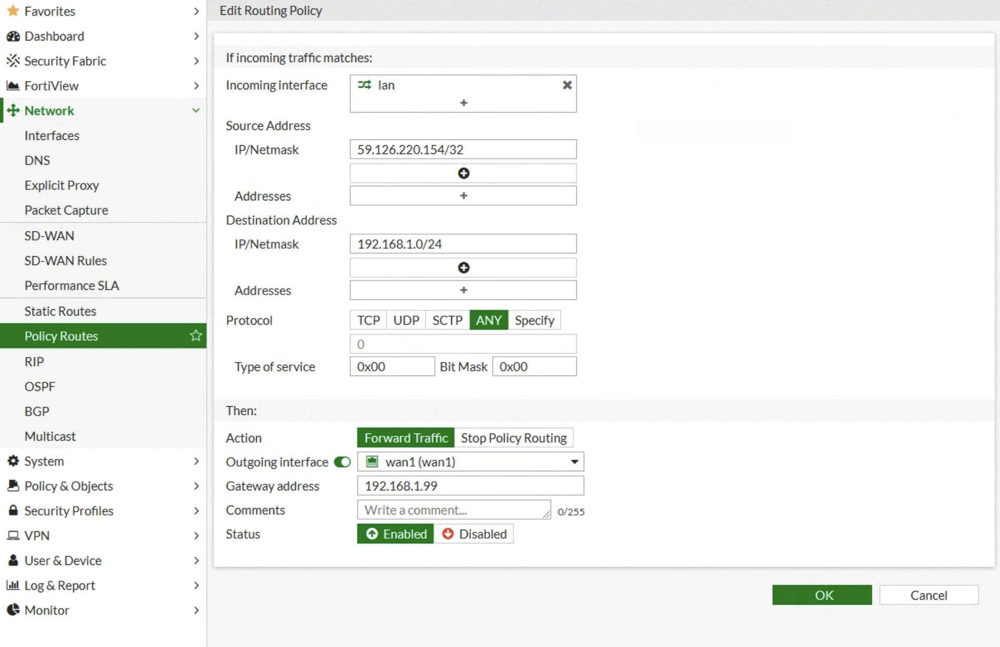
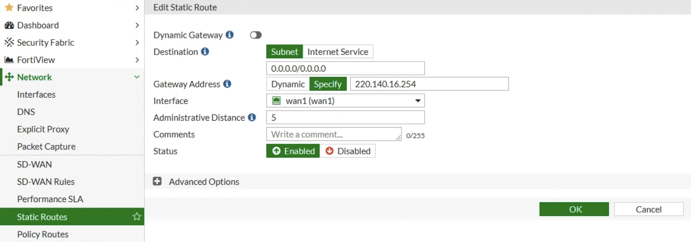

如何解決上述問題？
聲明：本人並非專業，如教學內容有誤請指正，也歡迎交流相關技術知識。
1. 登入FortiGate Web GUI管理介面後
2. Network -> Policy Routes
3. 左上方點擊Create New -> IPv4 Policy Routes
4. Incoming Interface選擇LAN
5. Source Address的IP/Netmask填寫你要Outgoing的WAN Interface
6. Destination Address的IP/Netmask填寫內網IP(看你要指定哪些內網IP走你指定的WAN Interface出去)
7. Then的Action選擇Forward Traffic
8. Outgoing Interface選擇要出去的WAN Interface
9. Gateway address就是你登入FortiGate Web GUI管理介面的內網IP，預設是192.168.1.99
按下OK就完成囉！
額外補充：Static Routes 靜態路由
重點：如果Static Routes兩個WAN Interface的Administrative Distance(管理距離，以下簡稱AD)都設定相同值，將被路由視為ECMP，導致Outgoing的IP亂跳。
FortiGate對AD的解釋：Adminstrative distance is used to determine the cost of the route. Smaller distances are considered as a "better" route that should be used when multiple path exist to the same destination. The routes with same distance will be considered as ECMP.
Google翻譯：管理距離用於確定路由的成本。 較小的距離被認為是“更好”的路線，當存在到同一目的地的多條路徑時應該使用這種路線。 距離相同的路由將被視為 ECMP。
AD值可以從0-255調整，每一種路由協定都有預設的AD值，AD值越低代表可靠性越高、優先級越高，如果你有看過我的神經網路文章，那你可以把AD值理解成Weights(權重)。
各種路由協議的預設管理距離

資料來源：https://www.networkurge.com/2020/04/administrative-distance-of-ip-routing.html
總之AD值越小，被選中的概率就比較大，假設WAN1為主線路就設定比WAN2更小的值。
ECMP(Equal-cost multi-path，中文稱等價多路徑)
這是用來實現這是用來實現負載均衡，不過在FortiGate中這個功能很陽春，不能指定來源(Source)，如果要指派某個來源出去時去連某個外網，就需要啟用Policy Routes，不過這就會破壞原本在Static Routes規則。
Priority 優先權
在Static Routes頁面中展開Advanced Options會看到Priority，假設WAN1是主線路，而WAN2是備用線路，就可以把WAN1設置為1，WAN2設置為2，優先走WAN1線路，當WAN1無法使用時將會切換至WAN2。